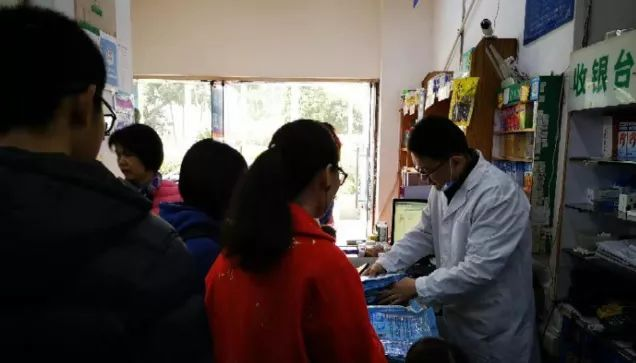
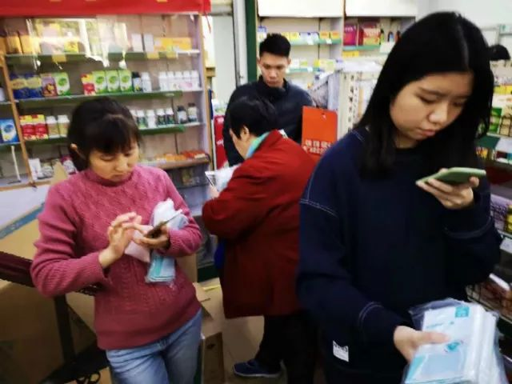

聚焦武汉肺炎疫情：“大众畜牧野味”确实存在，市场休市后才闭店
原文链接 备份链接 ********** *****网传“大众畜牧野味”的确存在，该商铺位于华南海鲜批发市场东区北侧，招牌名为“大众畜牧业味”。受市场整体休业影响，商铺已闭店。新京报记者多次拨打商铺电话，均无人接听。***** ▲1月21 …
22.01.2020

本文字数：1913，阅读时长大约3.5分钟
导读：第一财经记者在武汉、广州、上海等地进行了多方实地采访后了解到，不少地区的药房、便利店内的口罩在这几天已经脱销，即便有所补货也会被一抢而空。
作者 | 第一财经 吴绵强 乐琰 林志吟
“口罩今天一早就卖完了，你们如果需要，等下午两点之后来看看，我们那时会有补货，但是估计半小时就会售罄，需要的话得赶早。”上海一家药房门店内，一位店员正在对几位顾客解释。
第一财经记者在武汉、广州、上海等地进行了多方实地采访后了解到，不少地区的药房、便利店内的口罩在这几天已经脱销，即便有所补货也会被一抢而空。而部分生产厂家已经开始启动增量生产线，进行批量加产。

口罩被疯抢
1月21日，在广州南前往武汉火车站的高铁列车上，第一财经记者在乘坐的车厢内粗略统计发现，有40%左右的乘客配戴了口罩。一名四、五十岁的男子称，“我购买了口罩，但是并不愿意长期佩戴，毕竟呼吸还是受到影响。”
同日，广州海珠区一国药店，当上午11点，第一财经记者到达时，已排起了长队，每个顾客手里都抱着一堆口罩。而该药店的口罩几乎要一抢而空了。“我们库存的700多包都在这里了，卖完就没有了。我们现在没有涨价消息。但下次进货会不会涨价，现在还不清楚。”该店销售人员表示。以第一财经记者拿到的一包10装的口罩为例，目前售价10元。
第一财经记者走访一些药店看到，主要以销售医用护理口罩居多，而很少看到有销售医用外科口罩跟N95的。一位口罩生产企业对第一财经记者表示，他们生产的医用外科口罩主要以供医院为主，小部分才供药店。而由于国内的N95口罩渗透率不高，主要以实验室为主，所以国内有生产这块的企业还是偏少。
1月21日下午，上海一家药房门店内，第一财经记者同样看到口罩已经售罄，但是仍然有不少顾客表示愿意等补货。“其实未必一定是戴口罩，大家也可以通过双黄连口服液这类清热解毒的药物来预防，同时保持健康的生活来增加抵抗力也可以。”该药店店员告诉第一财经记者，目前类似泡腾片这类增加免疫力的商品也基本售罄了。
黄女士是武汉市汉阳区的上班一族，最近她到公司以及家附近的药店发现，口罩已经出现断货，但据其观察，街上却鲜有人员佩戴口罩。
有医护人员透露，大家不必盲目抢购口罩，而是应该理性地进行防护，当然口罩的确有一定的作用。此次新型冠状病毒感染的肺炎的临床表现为发热，乏力，呼吸道症状以干咳为主，并逐渐出现呼吸困难，严重者急性呼吸窘迫综合征、脓毒症休克、难以纠正的代谢性酸中毒和出凝血功能障碍。部分患者起病症状轻微，可无发热。多数患者预后良好，少数患者病情危重，甚至死亡。该类肺炎会通过飞沫和接触传播。正确的防护包括通风、保持手卫生、佩戴口罩和手套、眼罩等。
1月20日，国家卫健委高级别专家组组长钟南山院士在接受央视采访时表示，普通人要提高对新型冠状病毒肺炎的认识，要提高警惕，有感冒要到发热门诊就诊，要戴口罩。
商家紧急加产
据第一财经记者采访了解到，目前武汉市内的连锁药店，主要是以好药师大药房、益丰大药房、同济堂等药店为主，此外还有大量的零散连锁药店企业。有药店人士告诉第一财经记者，希望大家能够理性购买口罩。
九州通（600998.SH）系给连锁药店配送药品的主要供应商，该公司相关人士告诉第一财经记者，该公司目前正在加大口罩采购量，九州通会全力保证春节期间正常营业，保障供应、保证不涨价、保证质量、保障服务。
九州通进一步表示，目前该公司对销量较好的N95、N99、3M几种口罩正在加大采购量，采取预付货款积极订货，派专人驻场发货。
在医用口罩方面，九州通承诺会保证供应，“毕竟从仓库到药店再到消费者手中，需要一定时间的缓冲期，目前该公司正在全国各地调货至汉。”
口罩生产大户稳健医疗亦表示，确保口罩供应。湖北稳健医疗有限公司总经理纪华表示，春节期间稳健医疗将24小时连续生产，最大限度保障口罩，防护服，酒精片，消毒液等供应。同时，纪华表示，稳健绝不调高价格，确保原价销售。
据第一财经记者了解，稳健医疗的疾控防护产品主要包括医用级口罩、纱布口罩、医用级手套、防护服等。

稳健医疗招股书显示，报告期内，疾控防护产品销售收入分别为8375.65 万元、1.14亿元、1.37亿元和8330.68 万元，2017年增幅为 36.66%，增幅较大，主要原因是随着人们对空气质量和呼吸道疾控防护日益重视，报告期内公司口罩产品的销售量增幅较高所致。
奥美医疗（002950.SZ）表示，公司口罩系列产品包括一次性使用医用口罩、医用外科口罩、N95医用防护口罩等。奥美医疗相关人员对第一财经记者表示，鉴于近期口罩订单显著上升趋势，公司正积极组织生产，保证市场的供应。“原本是春节放假的，但现在产能都启动了，包括生产，包装，灭菌，仓储等部门都动起来了。”奥美医疗相关人员表示。
【推荐阅读】
钟南山肯定新型冠状病毒肺炎人传人


原文链接 备份链接 ********** *****网传“大众畜牧野味”的确存在，该商铺位于华南海鲜批发市场东区北侧，招牌名为“大众畜牧业味”。受市场整体休业影响，商铺已闭店。新京报记者多次拨打商铺电话，均无人接听。***** ▲1月21 …
原文链接 备份链接 [* 童兰 ](/author/100001342.html) 第一财经记者从中国科学院武汉病毒研究所了解到，研究所正在地方卫生管理部门的指挥下做相关病原检测方面工作，预计很快会有检测结果。 针对武汉不明原因肺 …
原文链接 备份链接 [* 陈益刊 ](/author/85.html) 一位海鲜市场经营甲鱼的辛先生告诉记者，也是从新闻上知道市场出现肺炎病人，所以也有些担心，戴了口罩。一直在正常营业，没有关停过。 武汉华南海鲜市场 …
原文链接 备份链接 今年回武汉的票特别好买，几乎不用抢，就很轻易地买到了北京西站到武汉站的票。到武汉的时间是晚上八点半，就在附近的旅馆住一夜，第二天去汉口的青年路客运站坐长途客车回武穴。 我把这个计划告知我朋友后，朋友说：“不要在武汉逗 …
原文链接 备份链接 发热门诊排起长龙的就诊队伍似乎在宣告，这座城市正面临一次巨大的挑战。 全文4742字，阅读约需9分钟 ▲湖北各地出现口罩防护服等防疫物资短缺 拟请求国家支援。新京报我们视频出品（ID：wevideo） 距离除夕还有3 …